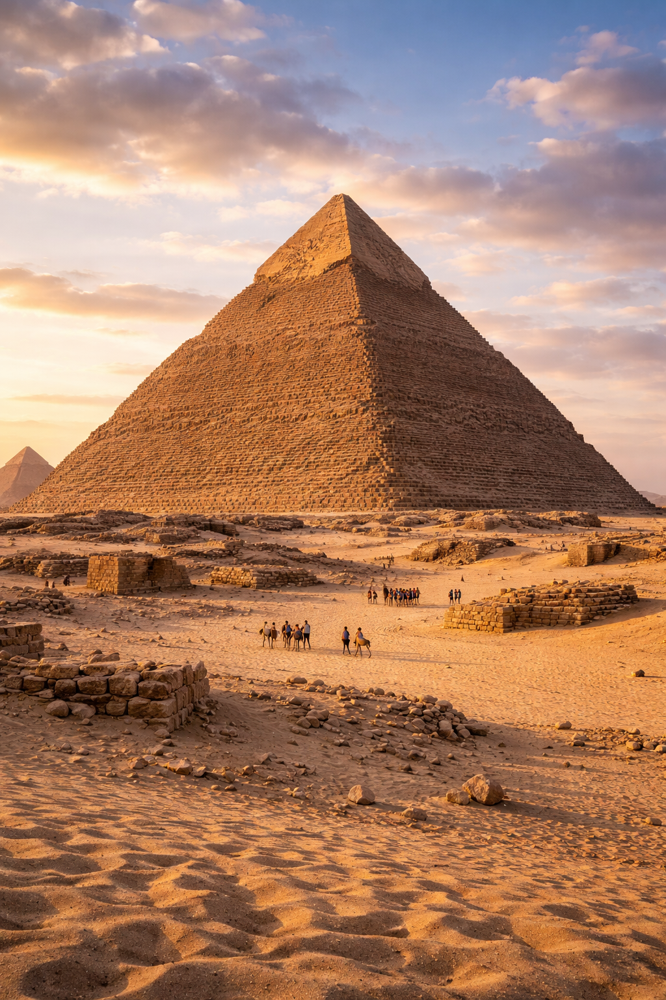
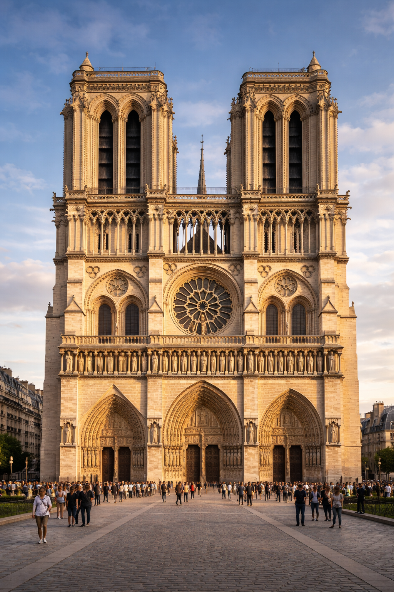

Morio the Mann — Vision
魂の痕跡を、
万年先へ。
刹那から、永遠へ。
人間の感性・精神性が創る、真のサステイナビリティ。
刹那から、永遠へ。
人間の感性・精神性が創る、真のサステイナビリティ。
テクノロジーは指数関数的に更新される一方で、価値の寿命は極めて短くなっています。プラットフォームも主役も数年で交代する、絶え間ない短期志向の連鎖。時間軸の再定義こそが、今、最も不可欠な課題です。

真に持続可能な社会を目指すのであれば、我々は1000年後の人々にも価値を生み出し続ける創造をするべきです。消費耐久性ではなく、cultural durability——文化耐久性。時間の審美眼に耐える作品のみを創る。
手仕事、素材、時間が宿すオーラこそが、デジタルが決して模倣し得ない真の価値を規定します。感性と精神性が最終審級となり、デジタルは黒子として支援に徹する。

ベンチマークはスイス時計産業。「時間」という機能ではなく「資産」としての価値を売ることで、圧倒的な市場支配力を維持しています。現在の日本の工芸市場約3,000億円を、10兆円規模のウルトラバリュー産業へ昇華させる。
機能ではなく「資産」として売り、世界価値シェア50%超を実現。
時間とともに上昇する資産。手仕事の精神性と希少性が最高の付加価値。
現在の工芸市場を、スイスモデル適用で30倍超の産業へ昇華。

1000年単位のプロダクトがもたらすLTVこそが、真の富です。MTMグループの提供価値とは、土地のポテンシャルを最大化すること——全く別次元の価値を生み出すソリューションです。
初期投資の回収のみ。解体・再建築で資産価値はマイナスへ。
文化財としての価値が物理的減価償却を上回る。
国家アイデンティティとなり永続的な富を生み続ける。



THE STUMPは、日本再興の象徴兼プロトタイプです。最終的な「現人類のピラミッド」を創造するための礎石であり、視座を1000年単位以上に引き上げるためのティーザーでもあります。
階高10m、天井高9m——通常の建築スケールを凌駕する質量。木・石・金属の融合が、1000年先も地に根ざす構造体を実現します。